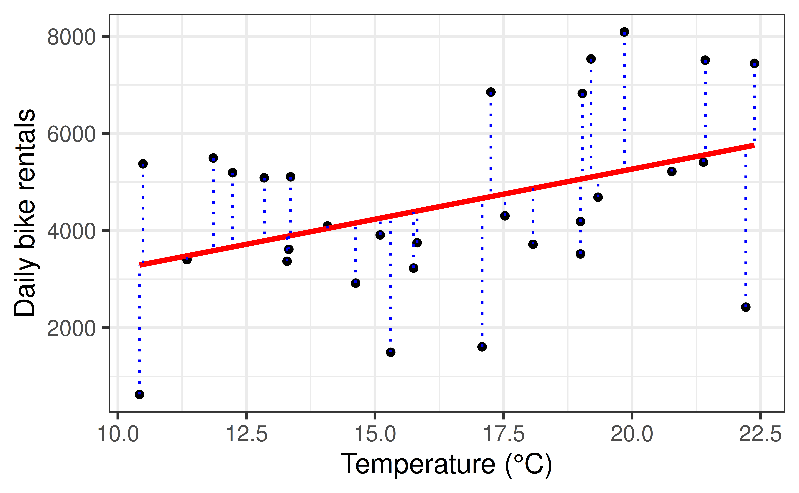
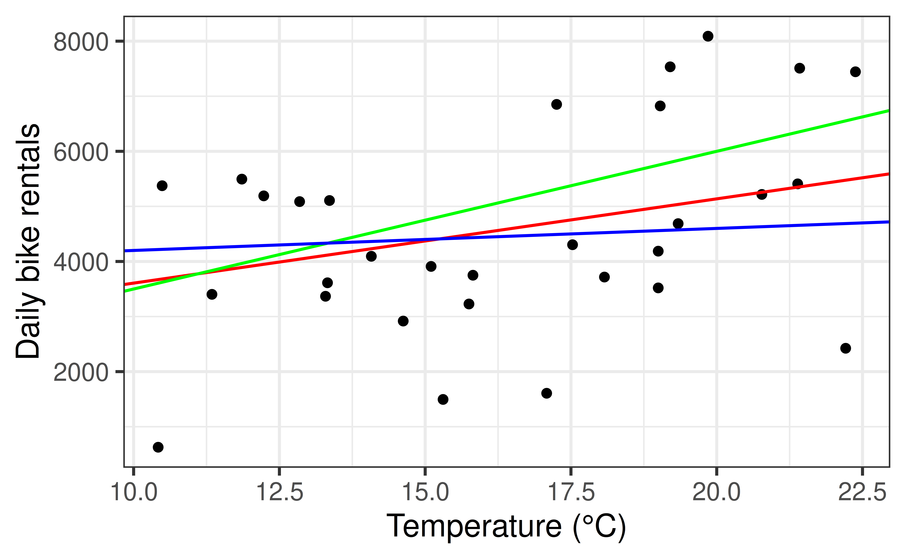

Residuals, Least Squares, and Model Evaluation
Prof. Eric Friedlander
Topics
- Define residuals, and connect them to the idea of variation in \(Y\).
- Understand how the least squares method chooses a regression line.
- Partition variation into model and error (ANOVA), and use it to compute \(R^2\) and RMSE.
Last time
- Regression works with a categorical predictor \(X\), just like a quantitative one.
- R recodes a \(K\)-level categorical variable into \(K - 1\) indicator (dummy) variables, dropping the reference level.
- The intercept is the mean of the response at the reference level; each slope is the difference in means from that level.
- We started playing with the Coffee Truck to generate our own data.
Back to the Coffee Truck
Warm-Up
Complete Exercise 1.
Thinking about evaluating predictions
Quick Data Cleaning
- What is this code doing?
A Simple Model For count
- Let’s start by considering a very basic model to predict
count. - We’ll write it out using a word equation:
- count = constant + error
- Our statistical model would be:
- count = \(\beta_0 + \epsilon\)
- Our regression equation would be:
- \(\hat{y} = \hat{\beta}_0\)
- What number should we use for \(\hat{\beta}_0\)?
How should we choose \(\hat{\beta}_0\)?
- Suppose I choose \(\hat{\beta}_0 = 4000\)
- Then I predict the number of bike rentals on a given day to be 4000
- On a given day the actual count was 4500. What’s my “error” for that day?
Evaluating Predictions
- Suppose I wanted to predict
count(the number of bike rentals) in the fall season. Which of the following numbers is best for the first number?- 3909
- 4276
- 5010
- 5423
Residuals
Residuals
Suppose we have:
- Prediction: \(\hat{y}_i\)
- Actual: \(y_i\)
- Residual: \(e_i = y_i - \hat{y}_i\)
Residual: How much did we miss by?
- Why the subscript \(i\)?
- Can residuals be negative?
- Do we want big or small residuals?
Activity
On the board, compute the residuals for all three points for each prediction (you should have 6 numbers when you’re done).
Try and use the residuals to argue which of the two prediction is better.
Potential values of \(\hat{\beta}_0\):
- 4276 (\(\hat{y}_i = 4276\))
- 5010 (\(\hat{y}_i = 5010\))
Note: 4276 is actually the mean of 2395, 5423, 5010
Interesting properties of the mean
- Sum of the residuals is 0
- Intuitively: balances the errors on either side of the mean
- Would a negative or positive sum be better?
- 4276 is the mean of 2395, 5423, 5010… Is this better than the median of 5010?
From Mean to Variability and SSE
- But what is the best number we can use?
- Can’t sum them because some are negative…
- What if we square each of the residuals to make them positive and then sum them?
- We’ll call this the Sum of Squared Error (SSE)
- The mean gives use the smallest SSE possible for any single number
- Why not just use the median?…
- Historically: can be done with calculus
- Luckily: has nice theoretical properties that go far beyond the scope of this class
- Also… mean is the center… the SSE gives us a measure of how spread out our observations are… it gives us an idea of the amount of variation or variability in our data
- Remember: the goals of statistics is to explain variability
The regression model
- The nice thing about regression is that we don’t have to predict the same value for every point.
- Our goal should be to explain MORE variation than the mean.
- We call predictions for observations that we have fitted values.
Residuals: Visually

\[\text{residual} = \text{observed} - \text{predicted} = y_i - \hat{y}_i = e_i\]
- A positive residual: the point is above the line (model underpredicted).
- A negative residual: the point is below the line (model overpredicted).
Does our model explain more variation than the mean?
On the board:
- Compute the fitted values for the three points above using the model above.
- Compute the residuals for each of the fitted points.
- Compute the SSE for these three points.
- Are we explaining more or less variation than just using the mean as our model?
Fitting Our Model
Choosing values for \(\hat{\beta}_1\) and \(\hat{\beta}_0\)

Which of these three lines does the “best” job? How would you decide?
Least squares regression
- We need a rule for picking the line, not just a line.
- Least squares method: choose \(\hat{\beta}_0\) and \(\hat{\beta}_1\) to minimize the sum of squared error \[ \sum_{i=1}^n e_i^2 = \sum_{i=1}^n (y_i - \hat{y}_i)^2 = \sum_{i=1}^n (y_i - (\hat{\beta}_0 + \hat{\beta}_1 x_i))^2 \]
- If we use \(\bar{y}\) for our model this shoud look a little familiar \[
SST = \sum_{i=1}^n (y_i - \bar{y})^2
\]
- This is the numerator in the calculation of variance/standard deviation
- We can this of this as the Total Variation in our response variable
- Basic idea: choose the line that explains the most variation in the data
- How does one actually do this?…. Calculus (beyond the scope of this course)
Click here for details on deriving the equations for slope and intercept, which is easy if you know multivariate calculus.
Let’s think about variation
- DATA = MODEL + ERROR
- \(\substack{\text{Total Variation} \\ \text{in Y}} = \substack{\text{Variation explained} \\ \text{by model}} + \substack{\text{Variation not explained} \\ \text{by model}}\)
- \(SST = SSM + SSE\) (Note, you may see other acronym like \(SSR\) instead of \(SSE\))
- \(SST\) = Sum of Squares Total (same as SSE if we use the mean as our model)
- \(SSE\) = Sum of Squares Error (the amount of variation not explained by the model)
- \(SSM\) = Sum of Squares Model (the amount of variation explained by the model)
- We’ve calculated both the \(SST\) and \(SSE\)… we can get the SSM using subtraction: \(SST = SSM + SSE\)
- Every point’s residual is a leftover piece of variation the model didn’t explain.
Putting it all together
Compute the SST, SSM, and SSE for using the linear regression model and compare it to the same values if using the mean as our model.
Recap
- A residual is the leftover gap between an observed value and the model’s prediction: \(e_i = y_i - \hat{y}_i\).
- The least squares method picks \(\hat{\beta}_0, \hat{\beta}_1\) to minimize \(\sum e_i^2\).
- Can decompose total variation (SST) into variation explained by the model (SSM) and leftover variation (SSE).